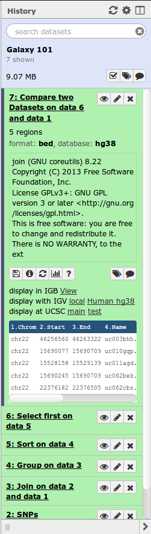
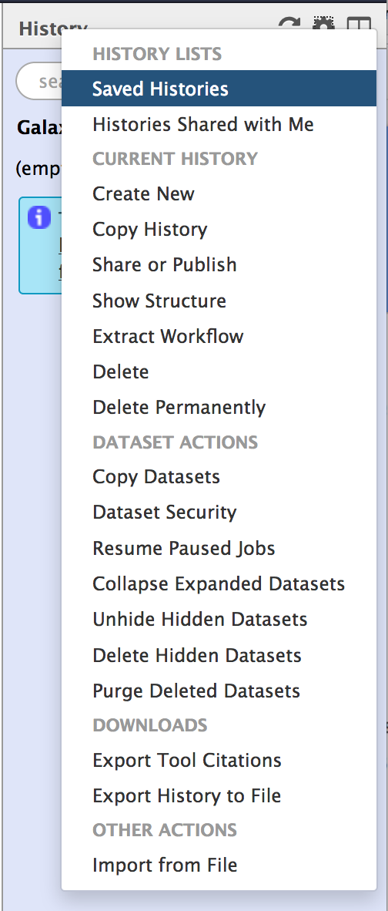

# What is Galaxy?
---
[](https://galaxyproject.org/)
- **Web-based** platform for computational biomedical research
- Developed at Penn State, Johns Hopkins and G. Washington universities with substantial outside contributions
- **Open source** under [Academic Free License](https://opensource.org/licenses/AFL-3.0)
- More than 4,400 [citations](http://www.citeulike.org/group/16008/)
- More than 80 [public Galaxy servers](https://galaxyproject.org/public-galaxy-servers/)
- Many more non-public
- Both general-purpose and domain-specific
???
The Galaxy Team is composed by bioinformaticians and software engineers
---
### Core values
- **Accessibility**
- Users without programming experience can easily specify parameters, run tools, workflows and parse/filter data
- **Reproducibility**
- Galaxy captures information so that any user can repeat and understand a complete computational analysis
- **Transparency**
- Users share and publish analyses via the web and create Pages and workflows - interactive, web-based documents that describe a complete analysis
???
Accessibility: Users without programming experience can easily specify parameters and run tools and workflows.
Reproducibility: Galaxy captures information so that any user can repeat and understand a complete computational analysis.
Transparency: Users share and publish analyses via the web and create Pages, interactive, web-based documents that describe a complete analysis.
---
# User Interface
---
### Main Galaxy interface

Home page divided into 3 panels
---
### Top menu

- *Analyze Data* - go back to the 3-panels homepage
- *Workflow* - access existing workflows or create new one using the editable diagrammatic pipeline
- *Shared data* - access data libraries, histories, workflows, visualizations and pages shared with you
- *Visualization* - create new track browser and access your saved visualisations
- *Help* - links to Galaxy Biostar (Q&A), Galaxy Community Hub (Wiki), and Interactive Tours
- *User* – your preferences and saved histories, datasets, and pages
---
### Tool interface

---
### Tools
- Each tool is a text file describing:
- input datasets, parameters, commands, and outputs
- help, tests, citations, dependency requirements
- Free tool store: [Galaxy Tool Shed](https://toolshed.g2.bx.psu.edu/)
- Thousands of tools already available
- Every software can be embedded
- If a tool is not available, ask the Galaxy community for help!
- Only a Galaxy admin can install tools
- New versions can be installed without removing old ones to ensure reproducibility
???
A tool describes:
- the input datasets and their datatypes
- the tool parameters (numerical, text, boolean, selections, colour)
- how to generate a command to execute the tool with the specified inputs and parameters
- the output datasets the tool should produce and their datatypes
---
### History
- Location of all your analyses 
- Collect all datasets (files) produced by tools you run
- At the heart of Galaxy’s reproducibility
For each dataset, the history tracks:
- Name, format, size, creation time, datatype-specific metadata
- Tool id and version, inputs, parameters
- Standard output (`stdout`) and error (`stderr`)
- State (grey: waiting; yellow: running; green: success; red: failed)
- Hidden, deleted, purged
???
Purged means permanently deleted
---
### Multiple histories
- You can have as many histories as you want
- *Each history should correspond to a different analysis*
- *and should have a meaningful name*
---
### History options menu
- History behavior is controlled by the *History options* (gear icon) 
.image-25[]
- Most options are self explanatory
- *Create New* history will **not** make your current history disappear
- To list all your histories, choose *Saved Histories*
- You can *Copy Datasets* from one history to another
---
# Loading data
---
### Importing data
- Copy/paste from a file
- Upload data from a local computer
- Upload data from internet
- Upload data from database queries
- UCSC, BioMart, ENCODE, modENCODE, Flymine etc.
- Download shared data from public libraries or shared Data libraries, Histories, Workflows, Visualizations, and Pages on https://usegalaxy.org/
- Upload data from FTP (>2GB)
---
### Datatypes
- When uploading, datatype can be automatically detected or assigned by user
- For datasets produced by a tool, the datatype is assigned by the tool
- Tools only accept input datasets with the appropriate datatypes
- You can change the datatype in 2 ways:
- Edit Attributes -> Datatype
- Edit Attributes -> Convert Formats
???
- Edit Attributes -> Datatype is used to fix a wrongly assigned datatype
- Edit Attributes -> Convert Formats creates a new dataset using a tool that converts the original dataset in the new format
- New datatypes can be added to the Galaxy code base, if missing
---
### Reference genomes
- Genome build specifies which genome assembly a dataset is associated with
- e.g. mm10, hg19...
- Genome build can be automatically detected or assigned by user
- User can define their own custom genome build
- New genome assembly can be added by the site Galaxy admin
---
# Workflows
---
### Workflow interface

---
### Workflows
- Can be **extracted** from a history
- Allow to easily convert an existing history into an analysis workflow
- Can be **built manualy** by adding and configuring tools using the workflow canvas
- Can be **imported** using an existing shared workflow
---
### Why would you want to create workflows?
- **Re-run** the same analysis on different input data sets
- Change parameters before re-running a similar analysis
- Make use of the workflow job **scheduling**
- job is submitted as soon as its inputs are ready
- Create **sub**-workflows: a workflow inside another workflow
- Share workflows for publication and with the community
---
### Data sharing
- You can share your Galaxy items - histories, workflows, visualizations, and pages - with other people in three different ways:
- Directly using a Galaxy account's email addresses on the same instance
- Using a web link, with anyone who knows the link
- Using a web link and publishing it to make it accessible to everyone from the *Shared Data* menu
- Tools are shared using the free tool store: [Galaxy Tool Shed](https://toolshed.g2.bx.psu.edu/)
---
### Data visualization
- Track browser called Trackster
- To visualize genomic data in a tightly integrated way
---
### Community
- Be part of an active and friendly community
- Get support and your questions answered on [Galaxy Biostars](https://biostar.usegalaxy.org/)
- Access community curated documentation on [Galaxy Community Hub](https://www.galaxyproject.org/)
- Learn more about Galaxy for scientists and for developers and admins on [Galaxy Training Community](http://galaxyproject.github.io/training-material/)